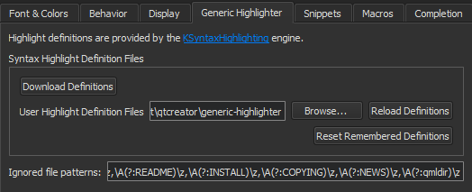
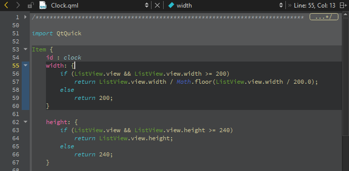
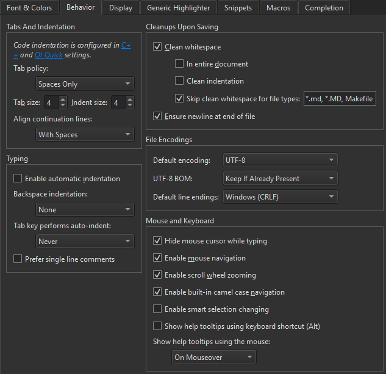

Semantic Highlighting
Qt Creator understands the C++, QML, and JavaScript languages as code, not as plain text. It reads the source code, analyzes it, and highlights it based on the semantic checks that it does for the following code elements:
- Types (such as classes, structs, and type definitions)
- Local variables
- Class fields
- Virtual functions
To specify the color scheme to use for semantic highlighting, select Tools > Options > Text Editor > Fonts & Color.
Qt Creator supports syntax highlighting also for other types of files than C++, QML, or JavaScript.
Generic Highlighting
Generic highlighting is provided by KSyntaxHighlighting, which is the syntax highlighting engine for Kate syntax definitions. Qt Creator comes with most of the commonly used syntax files, and you can download additional files. For more information about the definition files, see Working with Syntax Highlighting.
Font attributes that a syntax definition file explicitly specifies, such as bold, italic, underline, or strike through, are applied. Colors are applied if they are readable with Qt Creator themes.
If more than one highlight definition is available for the file that you open for editing, the editor asks you to select the one to use. To save the selection, select Remember My Choice. To reset the remembered definitions, select Tools > Options > Text Editor > Generic Highlighter > Reset Remembered Definitions.
If the editor cannot find the highlight definition for a file that you open for editing, it prompts you to download additional highlight definition files. Select Download Definitions to download the files. Information about the downloaded files is displayed in the General Messages output pane.
To suppress the message for a particular file pattern, select Tools > Options > Text Editor > Generic Highlighter and add the pattern to the Ignored file patterns field.

If you have written your own syntax definition files, you can provide an additional definition search path in the User Highlight Definition Files field. To apply the changes you make to the definition files, select Reload Definitions.
Highlighting and Folding Blocks
Use block highlighting to visually separate parts of the code that belong together. For example, when you place the cursor within the braces, the code enclosed in braces is highlighted.

To enable block highlighting, select Tools > Options > Text Editor > Display > Highlight blocks.
Use the folding markers to collapse and expand blocks of code within braces. Click the folding marker to collapse or expand a block. In the figure above, the folding markers are located between the line number and the text pane.
To show the folding markers, select Tools > Options > Text Editor > Display > Display folding markers. This option is enabled by default.

When the cursor is on a brace, the matching brace is animated by default. To turn off the animation and just highlight the block and the braces, select Tools > Options > Text Editor > Display and deselect Animate matching parentheses.
You can use keyboard shortcuts to move within and between blocks. To go to block end, press Ctrl+] and to go to block start, press Ctrl+[. To also select the lines from the cursor position to the end or beginning of the block, press Ctrl+Shift+] and Ctrl+Shift+[, respectively.
To select the current block, press Ctrl+U. A second key press extends the selection to the parent block. To undo the last selection, press Ctrl+Alt+Shift+U. To enable smart block selection, select Tools > Options > Text Editor > Behavior > Enable smart selection changing.
